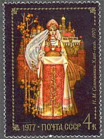
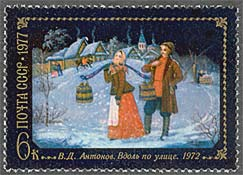
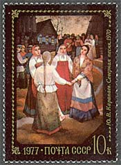
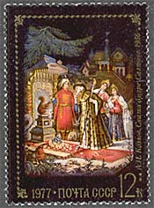
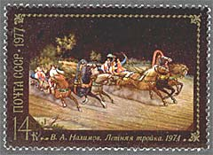
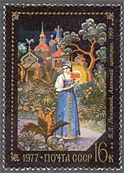
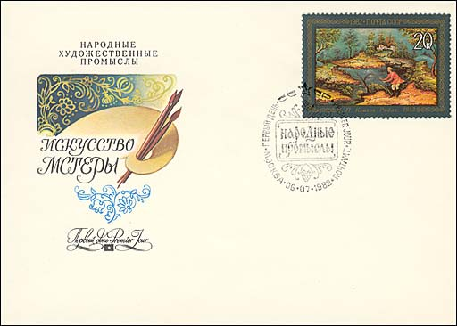

In the year 1977 the former USSR postal administration has issued a wonderful set shoving some folk tale paintings from the Fedoskino artists' atelier. Please point toward the images with the mouse index in order to get more information about the stamps and the artists.
The Village of
Fedoskino, located 38 km. north of Moscow, on the banks of the Ucha
River, is Russia's oldest center of lacquer miniature painting. Many of the
inhabitants of this village are connected with this craft. The secrets of
making and painting papier-mâché lacquers have been passed from generation to
generation for more than 200 years.
The fashion of snuffing became so popular by the end of the 18th century
that the demand for inexpensive snuff boxes began to rise and papier-mâché
proved to be the perfect material. A host of small factories were engaged in
making snuff boxes at this time. Some of the most notable and famous
were the factories of Petr Korobov and the Vishnyakov brothers.
|
 |
 |
 |
Lacquer miniatures of the Fedoskino region were made with the help of
multi-layer oil painting on the primed papier-mâché surface with
special lining. Mother-of-pearl, gold leaf, silver foil and metal power
were broadly used. Painting in translucent layers of paint over various
priming and lining was locally referred to as "see-through" as distinct from
ordinary thick painting as "body". It is important to note that combining the
techniques of "see-through" and "body" has remained unchanged to the present
time.
The years of the revolution
and the subsequent Civil War took a heavy tool on the craftsmen and
artists of Fedoskino and the workshops often stood idle as a result of raw
material shortages and little demand for finished goods. This situation
changed noticeably in 1923, when the All-Union Exhibition of Agricultural,
Industrial and Cultural Products was held in Moscow, where Fedoskino wares
were awarded the first degree diploma "for preserving the craft and high
cooperation". The Artel's products were exported abroad to international
exhibitions where they were awarded the Paris Exhibition diploma in 1925, and
the Milan Exhibition diploma in 1927.
 |
 |
 |
Today many Fedoskino artists experiment with form and
style. The Fedoskino art school stores a collection of 19th Century lacquer
miniatures as well as diploma works from its graduates from the 1930's
onwards. Opposite the present day factory still stands the old building of the
former Lukutin workshops, where the great-grandfathers turned out exquisite
papier-mâché lacquer miniatures.
(Source:
http://www.magicoffedoskino.com/Home/History.html)

The above FDC is part of a set issued
in 1982, under the title: Laquerware Paintings from Mstera. Boxes from
Mstera, though, usually have the lightest colors. Artists there almost
never choose black for their backgrounds, and instead use light blue, pink,
gold or ivory colors. With the addition of these colors, landscapes generally
play a more prominent role in Mstera works, and people and objects tend to
take a place within the background setting rather than remain separate from
it. In Mstera, a wide range of artistic talent exists. While some artists
paint dynamic and elaborate scenes from fairy tales or famous battles, others
concentrate on exquisite floral designs.
(Source:
http://www.lacquerbox.com/guide.htm)
What a chance that among such stamps like Jeanne Laburn (the leader of French communists in Moscow, Sc. 4550) and Lenin on Red Square, by Filatov (Sc. 4560) the Soviet artists were also allowed to produce and to publish some masterworks.
Links: